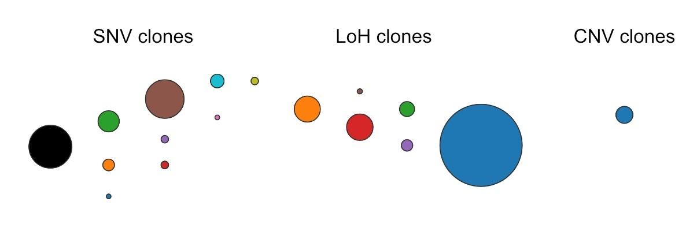
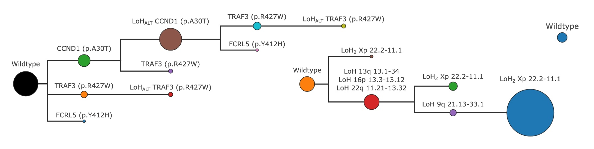
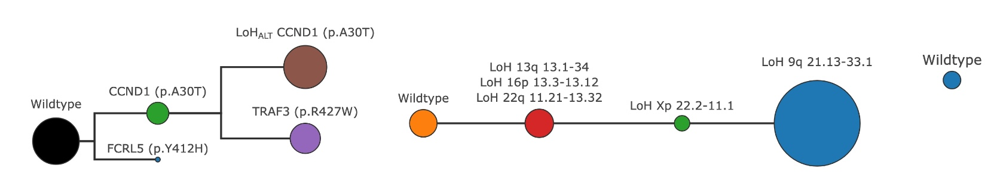
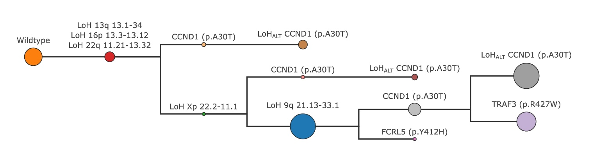
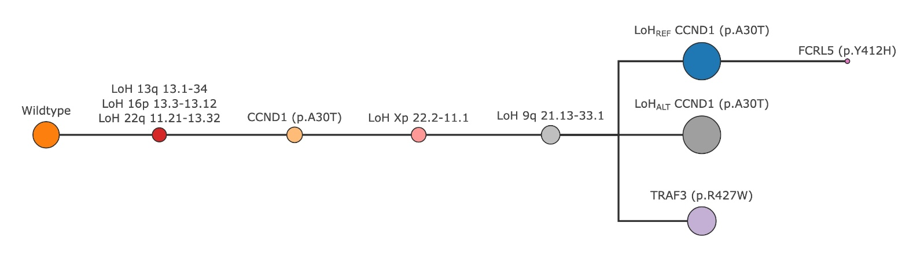

SPARC#
missionbio.demultiplex.phylogeny.sparc.SPARC
- class SPARC(ado_score: float = 0.9, adjusted_mixing: float = 0.2, branch_size: int = 10, min_snv_clone_size: float = 0.001, min_snv_clone_count: int = 6, min_loh_clone_size: float = 0.001, min_loh_clone_count: int = 25, min_loh_group_size: int = 2, min_cnv_depth: int = 8, min_cnv_completeness: float = 0.6, min_copy_gain_cells: int = 150, min_excess_correlated_freq: float = 1)#
SPARC: Single-cell Phylogeny And Reconstruction of Clones
A tool to infer the evolutionary history and clonal structure of a population, integrating information from SNVs, Loss of Heterozygosity (LoH), and Copy Number Variations (CNVs).
Snippets#
>>> import missionbio.mosaic as ms >>> from missionbio.demultiplex.phylogeny.sparc import SPARC >>> sample = ms.load_example_dataset("2 PBMC mix") >>> sparc = SPARC() >>> result = sparc.predict(sample.dna, variants=["chr4:55599436:T/C", "chr5:170837457:A/G"])
Note
The somatic variants must be present in the Dna assay and formatted as
chrom:pos:ref/altresultcontains the inferred phylogenetic tree and clone assignments.:>>> ordered_result = result.serialize_clones() >>> sample.dna.set_labels(ordered_result.labels.values) >>> fig = ordered_result.draw() # Draws the phylogenetic tree >>> fig.show()
Debugging the inference process can be done by inspecting the other attributes of the
SPARCResultobject.Variables#
Variants dropped due to low quality
Estimated ADO and error rates params
Functions#
predict(dna[, cnv, variants, cnamps, ...])Predict the phylogenetic tree structure from a DNA assay and a list of variants.
model_cnv(cnv[, mod_cn])Fits the model to the CNV assay (or assays for multiple controls)
search_path(profile)The path from the root to the given profile
search_path_drops(profile)The clones dropped at each step while trimming the initial tree to the final tree
- param ado_score:
Minimum ADO score to consider a clone valid.
- param adjusted_mixing:
The maximum adjusted mixing rate to consider when looking for doublets.
- param branch_size:
Controls the number of clones dropped in a given cycle. The run time is proportional to (branch_size ^ 3)
- param min_snv_clone_size:
Minimum clone size as a fraction of the total for SNV clones to be considered. For rare variants, this limit might be ignored. It does not guarantee that all SNV clones will be larger than this value.
- param min_snv_clone_count:
Minimum number of cells in a clone for the SNV clone to be considered. For rare variants, this limit might be ignored. It does not guarantee that all SNV clones will be larger than this value.
- param min_loh_clone_size:
Minimum clone size as a fraction of the total for LoHFinder. It does not guarantee that all LoH clones will be larger than this value.
- param min_loh_clone_count:
Minimum number of cells in a clone for LoHFinder. It does not guarantee that all LoH clones will be larger than this value.
- param min_loh_group_size:
Minimum number of variants in a LoH variant group for it to be considered. Passed directly to LoHFinder.
- param min_cnv_depth:
Minimum reads in each cell-amplicon for the completeness check
- param min_cnv_completeness:
Minimum fraction of amplicons in a given cell with sufficient depth to be considered for amplicon modeling and copy gain prediction.
- param min_copy_gain_cells:
The minimum number complete cells in a clone to consider it for copy gain clone identification
- param min_excess_correlated_freq:
Minimum percentage of cells whose correlation is not due to random chance as per the chi2 expected frequencies. It is used to filter somatic variants that are not correlated with the CNV labels.
Overview#
SPARC (Single-cell Phylogeny And Reconstruction of Clones) is a computational method for inferring phylogenetic relationships from single-cell DNA sequencing data. The algorithm integrates somatic mutations, genome-wide loss of heterozygosity (LoH), and copy number variations (CNVs) in a single phylogeny.
SPARC identifies clusters of cells (clones) given a set of mutations and then creates a phylogeny with those clones. Mutations are categorized into three types:
Somatic variants: Single nucleotide variants and small insertions and deletions.
LoH variants: Groups of variants on neighbouring amplicons that have a correlated change from heterozygous to homozygous state.
CNVs: Group of consecutive amplicons showing distinct copy number changes supported by allele frequency (AF) changes.
Each mutation type is processed separately to create individual phylogenies, which are then combined to construct a single phylogeny which contains all the mutation types.
Phylogeny estimation for a single mutation type#
The phylogeny estimation for each mutation type follows a three-step process:
Variant selection and clone calling: Identify informative variants for phylogeny construction and cluster cells into an initial set of clones.
Tree construction: Build an initial phylogenetic tree for the identified clones using a distance-based method.
Iterative tree refinement: Refine the tree to ensure consistency with biological assumptions
Initial clone estimation#
Somatic variants are currently expected as an input to SPARC. LoH and CNV events are identified by SPARC on the amplicons marked as genome-wide CNV ampicons. Each mutation type is processed separately to obtain an initial set of clones. It assumed that this initial set is an extensive list of all possible clones in the sample. They are refined later using phylogenetic constraints.

Initial set of clones called for each mutation type#
Somatic variant clone estimation#
For each somatic variant there are at most three possible signatures - wildtype, heterozygous, and homozygous. The ADO score is applied on each variant separately to find the possible signatures for it. The variants are then sorted based on the product of their mutation rate and genotyping rate. Cells are clustered iteratively into clones based on the possible signatures of each variant. Clones that are too small or dropped in this step.
During this iterative clustering step, some variants might have too much missing data causing clones found until that point to be dropped resulting in all mutated cells from a better genotyped variant to be marked as ambiguous. Since the presence of such variants leads to loss of information from other variants, these variants are currently dropped by SPARC when creating the phylogeny.
LoH event identification and clone calling#
LoH events are those where a cell loses one of the two alleles at a heterozygous locus. These events and their clones are identified using the following process:
Candidate Selection: Variants are first selected as candidates if they have a sufficient number of cells in each of the three genotype states (WT, HET, HOM).
Correlation Analysis: To identify variants that are part of the same large-scale LoH event (e.g., affecting a whole chromosome arm), the correlation between candidate variants using two complementary methods is used:
Chi-squared (χ²) Test: A contingency table is created for pairs of variants based on their NGT calls. A χ² test of independence is performed and variants with low p-values are considered correlated. This correlation matrix is partitioned to find groups of correlated variants. This test is sensitive and ends up finding variants correlated in very small populations of cells.
Pearson Correlation: The NGT calls are used to compute the Pearson correlation coefficient between pairs of variants. The correlation matrix is partitioned to find groups of correlated variants. This test ends up finding larger groups of variants, but may miss events in small populations of cells.
Grouping: Groups of correlated variants found by the two tests are then combined to create one set of LoH variant groups. Each group is treated as a single likely-LoH event.
Phasing and Validation: For each group of likely-LoH variants, clusters cells to identify a HET clone and one or two HOM clones. A group is considered a valid LoH event if the number of cells in the topmost (or top two) phased HOM clone are significantly more than all other phased HOM clones found. Two HOM clones may be found if both alleles are lost in different populations of cells.
Similar to the somatic variant clustering, the variants groups are sorted based on the number of variants in the group and the cells are clustered iteratively to find an extensive set of clones.
CNV clustering#
Every amplicon is modeled using a read depth dependent negative binomial distribution, which captures the expected reads and deviation in read counts for a cell with a given read depth. Then, CNV events are identified by clustering cells based on their AF corrected ploidy smoothed across neigbouring genome-wide amplicons. These clusters are iteratively merged based on similarity until no more merges are possible. CNV events are defined as groups of contiguous amplicons with the same copy number supported by AF changes in a clone with respect to other clones.
Modeling errors in the variants#
For somatciv variants and LoH variants the AF distribution of each variant is fit against an expected distribution that models various error rates (Sequencing / PCR based), Allelic dropout (ADO) rates, and population frequencies to estimate the ADO and error rate for each variant separately.
Tree construction#
Once the initial set of clones are found for each mutation type, an initial phylogenetic tree is constructed using a distance-based method. This results in a tree that adheres to the maximum parsimony principle, however it may contain biologically implausible pathways.

The tree constructed using all the initial clones for each mutation type#
A distance matrix between all clones (and a hypothetical wildtype root) is computed. The distance between two clones is the sum of their differing genotypes. For LoH variants, the heterozygous state (NGT=1) is treated as the wildtype state, so the hypothetical wildtype root clone has NGT=1 for LoH variants, NGT=0 for somatic variants, and CN=2 for CNV amplicons. The distance d(i,j) between two clones i and j is defined as:
d(i,j) = Σₖ |NGTᵢₖ - NGTⱼₖ| + Σₗ |CNᵢₗ - CNⱼₗ|
Where NGT is in (0, 1, 2) and copy numbers CN in (0, 1, 2, 3) across variants k and amplicons l.
The initial tree contains just the hypothetical wildtype root clone. The tree is then built iteratively as follows:
Set the clone with the least distance to any clone in the current tree as a child of that clone.
If more than two pairs of clones have the same distance, weigh the assignment based on the clone sizes - larger clones are given a higher weight i.e. they are more likely to be closer to the root of the tree, and therefore parents of smaller clones. This also ensures that larger clones accumulate in one branch of the tree. Due to this probabilistic assignment, there may be multiple possible trees for a given set of clones (Note: inifite sites assumption not yet applied).
Repeat until all clones are added to the tree.
Iterative tree refinement#
The initial tree may contain evolutionary pathways that are biologically implausible, such as the re-emergence of a lost mutation. SPARC refines the tree through an iterative trimming process to find a tree that adheres to phylogenetic constraints while also maximizing the likelihood of the cells belonging to the clones in the tree.

A refined tree after trimming invalid clones separately for each mutation type#
The following assumptions are made during the trimming process:
Phylogenetic constraints:
Somatic variants follow the infinite sites assumption, but can have an LoH event. This results in trees where the mutation event occurs only once and can be lost at most once.
LoH and CNV events can occur multiple times independently in different branches of the tree, but the same branch cannot have both a gain and a loss of the same event.
Smaller clones are more likely to be erroneous.
If any set of clones are found that do not follow the phylogenetic constraints, then those clones are marked as invalid. Some clones may be invalid, but dropping them would result in one of the mutations to be dropped as well. Such clones are marked as immune clones. All invalid clones that are not immuned are dropped from the tree probabilistically. The probability of dropping a clone is inversely proportional to its size - smaller clones are more likely to be dropped.
For each tree up to 10 new trees are searched by dropping different sets of invalid, non-immune clones. Of the (upto) 100 new trees searched, the top 10 trees are selected based on a composite score defined underneath. The top 10 trees are then evaluated for incompatibilities again and the process is repeated until the top trees are always the same i.e. trimming does not improve the score
Score = (proportion × assignment_likelihood) / (mutations * density)
where:
proportion: Agreement between observed and expected genotype frequencies. Favors trees that explain a larger fraction of the cells. Observed frequencies are computed based on assignment of cells to the clones in the tree. The expected frequencies are based on the NGT distribution of each variant separately.assignment_likelihood: Statistical confidence in cell-to-clone assignments. Favors trees where cells can be assigned to clones with high confidence.mutations: Total number of unique mutations - Penalizes trees with repeated mutations.density: Mutation density (mutations per clone) - Penalizes clones with multiple co-occurring mutations.
This scoring scheme balances tree complexity against explanatory power, favoring parsimonious trees with high assignment confidence.
If the topmost tree is valid, then that is the final tree returned by SPARC. If any invalid clone is still found then they are be dropped even if they are immuned. This may cause some mutations to be dropped from the tree - but this is quite rare in practice.
Combining phylogenies#
Each mutation type (Somatic variants, LoH, CNV) results in a separate phylogeny. These phylogenies are combined by simply crosstabulating the clones from each tree to create a combined set of clones. During the combination of clones, special considerations are given to the wildtype clone so as to not lose cells that may be wildtype due to the noisy nature of the combination process.

Tree obtained by combining the final clones from each mutation type#
The combined set of clones undergo the same iterative process of tree refinement to ensure that the final tree adheres to the phylogenetic constraints and maximizes the likelihood of cell assignments.

The final tree created by SPARC after combining all mutation types#